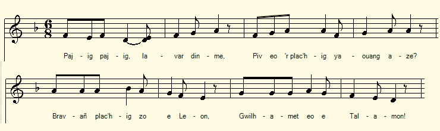
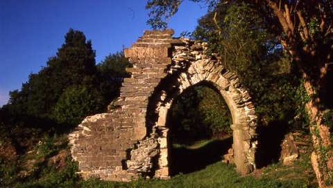
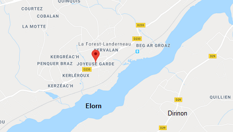

|
A propos de la mélodie Tirée de l'ouvrage de Maurice Duhamel "Musiques Bretonnes", page 51, elle est donnée comme le timbre accompagnant la gwerz trégoroise "Yvonne Le Hamon" publiée par Luzel dans ses "Gwerzioù", tome 1. A propos du texte Bien que le texte noté par La Villemarqué soit incomplet, il ne fait guère de doute qu'il s'agit de la même gwerz que celle collectée par Luzel sous le titre "Ivona ann Hamon" à Keramborgne en Plouaret en 1848, ainsi que d'une variante recueillie en 1836 auprès de son oncle, J.-M. Lehuérou. Cette gwerz figure dans la classification de Marieu sous le numéro 1198. |
About the tune From the work of Maurice Duhamel "Breton Music", page 51, it is given as the vehicle for the ballad "Yvonne Le Hamon" published by Luzel in his "Gwerzioù", Volume 1. About the lyrics Although the text noted by La Villemarqué is incomplete, there is little doubt that it is the same gwerz as that collected by Luzel under the title "Ivona ann Hamon" at Keramborgne in Plouaret in 1848, as well as a variant collected in 1836 from his uncle, J.-M. Lehuérou. This gwerz is listed in the Malrieu classification under the number 1198. |
|
BREZHONEG (Stumm KLT) P. 32 0. Pajik, pajik, lavar din-me Piv eor plach yaouank zo aze? [5] 1. - Bravañ plachig zo e Leon Gwilhamet eo e Talamon. [1] 2. Pa zoñje he mamm hag he zad Medo n he gwele kousket mad 3. Edo tremen hi dre ar ster, He breurig kamm, tabouliner Vont da fest-noz da Dro r maner [2] [3] 4. E Tromaner poe erruet Nint ket dar maner aet. 5. Aet int dar gambr gant an Aotroù Choari an diñs hag ar chartoù. 6. E-benn un euriad [ur gwiad] goude Ar plachik paour-mañ a ouele p. 33 / 17 7. Ne gave den he goñforte Nemet ann Aotrou a rae Hennezh a lare dezhi bepred 8. - Tavit Gwilhamet, na ouelit ket Me ho timezin pa vo red. 9. Mho timezin da Lan Fleuri Vailhantañ den zo r marchosi. 10. - Vailhant Fleuri, kemerit hi Me rin tri-c'hant skoued deoch ganti. 11. - Trugarez, ma mestr ha Aotrou, Non ket graet da zougen kornoù. 10. - Vailhant Fleuri, kemerit hi, Me roy ho-mañ, diganti 13. Me roy Tromaner hag e ren A dalv pemp-kant skoed hag all-ken 14. - Klaskit ur beleg dam servijiñ G plijadur vraz, Aotrou, mhe kemerin _______ [4] KLT gant Christian Souchon |
FRANCAIS P. 32 0. Mon page, je me demandais : Quelle est cette jeune beauté? [5] 1. - Cest la plus belle du Léon: Guillemette de Talamon. [1] 2. Quand ses père et mère pensaient Quelle était partie se couche, 3. Son frère, le tambourinaire, Lui faisait passer la rivière, Pour le « Tour de nuit » du manoir. [2] [3] 4. Arrivés à ce Tro- maner Ils quittent les lieux sans retard. 5. Ils suivent le seigneur chez lui Jouer aux cartes, aux dés aussi. 6. Oui mais voilà quune heure après Cette pauvre fille pleurait. p. 33 / 17 7. Personne pour la consoler, Le seigneur lui-même excepté, Qui ne cessait de répéter: 8. - Taisez-vous donc, ne pleurez pas Je vous marierai, je le dois. 9. A Alain Fleury, mon amie, Mon meilleur valet décurie. 10. - Fleury, prenez-la, car en plus Je vous donne trois cents écus! 11. - Merci, mon maître et mon seigneur, Porter les cornes: quelle horreur! 12. Vaillant Fleury, écoutez donc, En plus delle, je vous fais don 13. Du «Tromaner»: les revenus En sont dau moins cinq cents écus. 14. - Vite un prêtre, pour nous marier : Je la prendrai bien volontiers _______ [4] Traduction Christian Souchon (c) 2019 |
ENGLISH Page 32 0. - My little page, who is the fair Young girl that I see over there? [5] 1. The prettiest girl in Leon: It's Guillemette of Talamon. [1] 2. When her parents had every ground To think that she was sleeping sound, 3. She was ferried oer the river, By her lame brother, the drummer, To the night feast round the manor. [2] [3] 4. When they arrived to the dance, They kept clear from the residence, 5. But followed to his room the Lord And they played with him dice and cards. 6. After an hour full of gaiety This poor girl was crying sadly. P. 33 / 17 7. There was no one to comfort her Save the Lord who made all over Again the same and strange offer: 8. - Be quiet, Guillemette, dont worry If it must be I will marry, 9. Marry you to Alain Fleury The best groom I had in my life. 10. - Good Fleury, take her for your wife, Three hundred crowns I can afford 11. - Thank you, my master and my lord, But I dont fell like wearing horns. 12. - Listen I give in addition The round-the-manor procession 13. The round-the-manor procession Its a five hundred crown income. 14. - A priest! I am in a hurry Sir, Ill take her, definitely. _________ [4] |
|
[1] Talamon : la jeune fille doit être originaire de Dirinon ou de ses alentours. Dirinon faisait partie de l'ancienne paroisse primitive de Plougastel avec ses trèves Saint-Urbain et Trévarn (au sud de lElorn). Ce territoire était autrefois très boisé et connu comme la forêt de Talamon). En 1910, Emile Grimaud, dans la « Revue de Bretagne, de Vendée et dAnjou, vol. 43 à 44, p. 194, indiquait que la « Vie de Saint Ténénan dit formellement que la forêt de Tal -Amon (le bord frontal de la rivière) était sur la rive gauche de lElorn, en face de la forêt de Guipavas [et qu]il en reste encore des vestiges sur les côteaux qui bordent cette rivière (aven). » LElorn est sans doute la rivière que son frère boiteux fait traverser à limprudente Guillemette. [2] Tromaner : Le manoir où a lieu la fête du Tro r Maner ou Tromaner doit par conséquent se situer sur la rive droite de lElorn, aux alentours de La Forest-Landerneau autrefois Gouele Forest. Il apparaît que la version La Villemarqué qui parle dune fête (procession ?) organisée autour dun manoir situé de lautre côté dune rivière par rapport au pays dorigine de lhéroïne, le Talamon, est la version « endogène » (Léonaise) de celle (« exogène ») collectée par Luzel en Trégor. Le manoir en question doit se trouver sur la rive droite de lElorn assez loin de Landerneau et de son célèbre pont bâti, le Pont de Rohan, pour que les jeunes fugueurs choisissent de passer la rivière en bateau. Peut-être le château de la gwerz, autour duquel est donnée la fête de nuit de Tror Maner (« Tour du Manoir », str. 3) est-il le Château de Joyeuse Garde sur la commune de La Forest-Landerneau, dans la forêt qui sétendait jusquà Brest. Ce château, ruiné dès le XVIème siècle, selon divers écrits qui nen révèlent pas la raison, aurait été construit au XIIème siècle pour interdire laccès de la rivière aux navires ennemis. Il paraît vraisemblable quà la fin du XVème siècle il fut démantelé. Ces ruines ont été fouillées à partir de 1967. Cest dans ce paysage boisé que lon situe le centre du royaume féérique du roman de Lancelot du Lac. Après sêtre emparé seul du château qui sappelait alors « Château de la Douloureuse Garde » en raison des quarante dangereux géants qui le gardaient, le courageux Lancelot le rebaptisa en « Joyeuse-Garde », pour évoquer les fêtes et tournois auxquels il comptait convier par la suite le roi Arthur et sa cour, pour lui prouver qu'il était digne du rang chevalier auquel il l'avait élevé.  [3] Fest-noz: Les châteaux sont rares dans les environs, comme lindique un proverbe local : « "Pa n'oa kastell é néb léac'h - Oa kastell aman èn è léac'h" (Alors qu'il n'y avait château en nul lieu - Il y avait château ici en son lieu). La gwerz nous apprend que Guillemette délaissa ce manoir pour suivre dans ses appartements un seigneur du lieu (strophes 4 et 5). La localité la plus proche semble être Gouelet-Forest (goueled= bas de la forêt de Ploebevoas, aujourdhui Guipavas) quon appelle aujourdhui La Forest-Landerneau, une cure dépendant de l'abbaye de la Pointe Saint-Mathieu et surnommée encore Saint-Ténénan-la-Forêt au XVIIème siècle. La Forest fut érigée en paroisse au XIIIème siècle, bien que le prêtre ne reçût le titre de recteur quau XVIIème siècle. On sait par ailleurs que l'église de Saint-Divy (un bourg situé un peu plus au nord) était sa « trève » ou dépendance depuis la fin du XVème siècle. St-Divy, à titre d'hommage et pour reconnaître la suprématie de La Forest, y venait deux fois par an en procession : à la Pentecôte et le premier jour de l'octave du Saint-Sacrement. La « fest-noz endro dar maner » (fête nocturne autour du manoir) de la gwerz pourrait être une de ces processions. Elle avait lieu de nuit et était, comme tout vrai « pardon » de Bretagne, sans doute suivie de danses et de festivités propres à attirer une jeune fille demeurant sur lautre rive de lElorn... [4] Le trait en bas de la page 33 marque la fin du chant, du moins, tel que La Villemarqué la noté. Contrairement à Luzel qui se complaisait à accumuler et reproduire dans leurs moindres détails les récits flétrissant linconduite des aristocrates, le vicomte ne les appréciait guère. Pour la gwerz de Penanstank, on disposait dune version complète collectée par Madame de Saint-Prix pour restituer la totalité de lintrigue. Dans le cas présent, il semble bien que La Villemarqué ait été le seul à collecter cette gwerz qui, tout au moins sous cette forme, demeure donc incomplète. [5] Versions Luzel : Cependant, Luzel a publié une ballade (dans les « Gwerzioù, Tome I », p.486) intitulée « Ivona ann Hamon » (Yvonne Le Hamon), ainsi quune variante, toutes deux recueillies à Keramborgne en Plouaret (Trégor), lune auprès de Marie-Josèphe Kerival en 1848, lautre auprès de son oncle, J.-M. Lehuérou en 1836. La version 1 désigne ainsi lhéroïne, à la strophe 2 : «Ivona an Hamon, koanta plachig zo en Leon» (Yvonne Le Hamon, le plus jolie fille du Léon) , formule qui, rapprochée de la strophe 1 de notre gwerz, "Bravañ plachig zo e Leon Gwilhamet eo e Talamon" , (La plus jolie fille du Léon, cest Guillemette de Talamon) montre quil sagit bien de la même histoire, à lorigine du moins . La gwerz trégoroise ne dit mot du mariage projeté de la jeune fille avec le palefrenier du seigneur. Sous réserve quil ny ait pas eu de contamination par une autre gwerz, la version 1 de Luzel nous livre le dénouement de lhistoire, à savoir que la malheureuse jeune femme meurt en couches. Sa mère fait procéder à une autopsie en présence du baron qui reconnait la paternité de l'enfant, puis sengage à ne pas se marier : « Birwikenn hini neureujan/ balamour dach-chui, Ivona! » (Jamais je ne prendrai femme/ par égard pour vous, Yvonne !). Le nom du séducteur fourni par les versions Luzel qui, en Trégor, sont à classer parmi les gwerzioù « exogènes », comme on la dit, est certainement sujet à caution : » Baron Ar Choad » que Luzel traduit par « Baron Dubois », également appelé, dans la version 2, du nom de son manoir «Goazhamon» (gwazh=ruisseau). Une note de Luzel nous apprend qu »il y a un manoir de Goazhamon en la commune de Plouisy, arrondissement de Guingamp». Comme on le sait, les chanteurs ont lhabitude dacclimater les gwerzioù exogènes en y introduisant des références familières à leur public. En loccurrence on peut se demander si « Gwazhamon » ne remplace pas un « Koadhamon » (Bois dHamon) original. On aurait alors une proximité assez convaincante avec la version La Villemarqué où lhéroine est dite « Tal Amon » soit originaire de la région boisée de Dirinon-Talamon, sachant que ladite forêt, où se trouvait le manoir, se prolongeait et sétend toujours sur la rive nord de lElorn. |
[1] Talamon: the girl must be from Dirinon or its surroundings. Dirinon was part of the former parish of Plougastel, as were its dependencies Saint-Urbain and Trévarn (south of the Elorn river). This territory was once very wooded and known as the Talamon Forest. In 1910, Emile Grimaud, in the "Review of Brittany, Vendée and Anjou", vol. 43 to 44, p. 194, wrote that the "Life of Saint Tenenan clearly states that the forest of Tal-Amon (the front edge of the river) was on the left bank of the Elorn, opposite the forest of Guipavas and that there are still remains on the hillsides bordering this river (aven)." The Elorn river is undoubtedly the river over which her lame brother ferries the imprudent Guillemette. [2] Tromaner: The manor where the Tro 'r Maner or Tromaner festival takes place must therefore be located on the right bank of the Elorn, near La Forest-Landerneau formerly Gouele Forest. It appears that La Villemarqué's version which mentions a festive party (procession?) around a manor located on the other side of a river starting from the native country of the heroine, the Talamon area, is the "endogenous" version (Léon version) of the ("exogenous") version collected by Luzel in Trégor. The manor in question must be on the right bank of the Elorn far enough from Landerneau and its famous "built bridge", the Rohan Bridge, to pompt the young runaways to cross the river by boat. Perhaps the gwerz castle, around which is the night frolic of Tro'r Maner ("Way around the Manor", str. 3) is the Castle of Joyeuse Garde on the commune of La Forest-Landerneau, in the forest that stretched in olden times as far as Brest. This castle, ruined as early as in the sixteenth century, according to various sources that do not reveal the reason of this destruction, was built in the twelfth century to prohibit access from the river to enemy ships. It seems even likely that it was dismantled at the end of the 15th century. These ruins were investigated from 1967. It is in this wooded landscape that one locates the center of the magical realm in Lancelot du Lac's novel. After having captured alone the castle which was then called "Château de la Douloureuse Garde" (Castle of Dolorous Gard) on account of the forty dangerous giants who guarded it, the brave Lancelot renamed it in "Joyeuse-Garde" (Joyous-Gard), to evoke the festivals and tournaments to which he planned to invite King Arthur with his court to prove his knighthood to him.  [3] Fest-noz: Castles are rare in the area, as indicated by a local proverb: "Pa n'oa kastell é neb léac'h - Oa kastell aman èn è léac'h " (While there was no castle in any place, there was a castle here in its place). The gwerz tells us that Guillemette left this manor to follow in his apartments the lord of the place (stanzas 4 and 5). The nearest locality seems to be Gouelet-Forest, the (Goueled=Lower) Forest of Ploebevoas (Guipavas today), which is called today La Forest-Landerneau, a parish income imparted on the Abbey of Saint-Mathieu Point, also known as the Saint-Ténénan-la-Forêt Abbey in the XVIIth century. La Forest was established as a parish in its own right in the 13th century, though its minister did not receive the title of "Rector" until the 17th century. We also know that the church of Saint-Divy (a village located a little further north) was La Forêt's "truce" or dependency since the late fifteenth century. St Divy, as a tribute and to acknowledge the supremacy of La Forest, sent there representatives twice a year in procession: at Pentecost day and the first day of the octave of the Blessed Sacrament. The 'fest-noz endro d'ar maner" (night celebration around the castle) mentioned in the gwerz could be one of these two processions. It was held at night and was, like all true "pardons" (forgiveness liturgy) of Brittany, probably followed by dances and festivities apt to attract a girl living on the other side of the Elorn ... [4] The line at the bottom of page 33end of the song, at least, as recorded by La Villemarqué. Unlike Luzel, who took pleasure in accumulating and reproducing to the smallest detail the stories denouncing the misconduct of the aristocrats, Viscount La Villemarqué did not appreciate them very much. For the Penanstank gwerz, we had a complete version collected by Madame de Saint-Prix to restore the entire plot. In the present case, it seems that La Villemarqué was the only one to collect this gwerz which, at least in this form, remains incomplete. [5] Versions Luzel: However, Luzel published a ballad (in the "Gwerzioù, Volume I", p.486) titled "Ivona ann Hamon" (Yvonne Le Hamon), as well as a variant, both collected in Keramborgne in Plouaret (Trégor), one with Marie-Josèphe Kerival in 1848, the other with his uncle, J.-M. Lehuérou in 1836. Version 1 thus designates the heroine, in stanza 2: " Ivona an Hamon, koanta plac'hig zo en Leon" (Yvonne Le Hamon, the prettiest girl of Leon), a formula which, when paralleled to stanza 1 of our gwerz," Brava'n plac'hig zo e Leon Gwilham and eo e Talamon " (The most beautiful girl of Leon, it is Guillemette de Talamon) shows that it is indeed the same story, at least at the origin. The Tregor ballad does not mention in any way the projected marriage of the girl with the Lord's stable groom. Provided that there was no contamination by another gwerz, version 1 of Luzel reveals us the outcome of the story, namely that the unfortunate girl dies in childbirth. Her mother has an autopsy performed in the presence of the baron who recognizes the paternity of the child, and commits himself never to get married: "Birwikenn hini n'eureujan / balamour d'ac'h-c'hui, Ivona!" (I'll never take a wife / for your sake, Yvonne!). The name of the seducer provided by the Luzel versions which, in Trégor, are to be classified among the "exogenous" gwerzioù, as we have said, is certainly questionable: "Baron Ar C'hoad" which Luzel translates as "Baron Dubois", also called, in version 2, after the name of his mansion" Goazhamon "(gwazh=brook). There is a note by Luzel to the effect that "there is a Goazhamon mansion in the village Plouisy, district of Guingamp". As we know, singers are in the habit of acclimatizing exogenous (alien) gwerzioù by introducing references familiar to their audience. In this case, we may wonder if "Gwazhamon" does not replace an original "Koadhamon" (Hamon Wood). We would then have a fairly convincing proximity with the La Villemarqué version featuring a heroine named "Tal -Amon", i.e. originating from the wooded Dirinon-Talamon area, as we know that said forest, where the manor stood, stretched and still stretches on both banks, north and south, of the Elorn. |
|
BREZHONEG Gwez kentañ I Pajik, pajik, lavar din-me Piou ar plach iaouank zo ase ? Aotro, Ivona ann Hamon, Koanta plachik zo en Leon. Ma faj-bihan deus-te ganin, Eomp hon daou dhi zaludin : Demad dach Ivona n Hamon, Chui gouskfe n noz gant ar Baron ? Salv-ho-kraz, wit ze na rinn ket, Ma mamm zo newez-intanvezet, Hag a deuz a-walch a anvoui, Heb ober muioch choaz dez-hi. Ivonaïk deut-chui ganin, Me gasso ho mamm dal leandi ; Me gasso ho mamm da leanes, Chui, Ivona, vo barones. Kement n euz gret euz hi fedi Ma z eo bet et gant-han dhe di ; Ma z eo bet et da Voazhamon, Allas ! wit glachar hi chalon ! Ar Baron iaouank a lare Dhe chouarneres parrue : Laket ar beer a uz dann tan, DIvoanïk ha din, dhor choan. Ar Baron iaouank a lare Dhe bajik bihan en noz-se : Et dann traon, laret dIvona, Donet ganin-me da goania. Laret zo dech-chui, Ivona, Dont gant ar Baron da goania. Gant r servijerrienn me goanio, Gant r gegineres a gousko. Aotro, laret n euz Ivona Ndeui ket da ved-och da goania ; Gant r servijerrienn a koanio, Gant r gegineres a kouko. Et dann traon, laret dIvona Donet prim gant-on da goania ; Hag a vije merch ur markiz N vije gant-hi mui a diviz ! Laret a zo dech Ivona, Dont gant ar Baron da goania, Donet prim ha hasta hunan, Rag ma ar zoubenn o ienan. Ar baron iaouank a lare DIvona n Hamon en noz-se : Hag a vijech merch ur markiz, N vije gant-och mui a diviz ! Ma enor a garann parfet, Oa kiriek din na deujenn ket. Ivona n Hamon lavare, Euz taol ar Baron, pazee : Ma oufenn, aotro ar Baron, Ez afrontfech merch ann Hamon, Me dorfe pint, iwe gwerenn, Ha dre ar prenestr em daolfenn ! Gant-och Ivona, on souezet, Nho euz ket ho speret parfet. Ivona n Hamon a lare, N gwele r Baron pa chourvee : Ma oufenn, aotro ar Baron, Ez afrontfech merch ann Hamon, Ma oufenn-ze, aotro r Baron, Me voutfe r gontel em chalon ! Ar Baron iaouank a lare Da Ivona, pa hi chlewe : Gant-och, Ivona on souezet, Chui ne ket parfet ho speret ! II Ar Baron iaouank a lare Dhe gegineres euz r beure : Gret dijuni Ivona mad, Na ewit hi zrugarekad ! Ivona n Hamon a lare, Euz hi cher, dre ma tostaë : Aotro Doue, petra larinn, Er ger dam mamm pa arruinn : En ker en noz-ma on lojet, Gant ann dersienn on bet gwasket . . . . . . . . . . . . . . . . . . III N intanves paour a lavare N ti r medesinn pa arrue : Chui zellfe dour ur feumeulenn, Klanv eiz miz zo gant ann dersienn ? Ar medesinn a lavare Dann intanves paour en de-se : N hini zo perchenn dann dour-ma, Eiz miz bugale ma touga ; Eiz miz bugale hag anter ; Eiz miz bugale hag anter, Ha bars ma arrufet er ger, A vezo achu hi amzer ! IV N intanves paour a lavare, Ebars ar ger pa arrue : Ma merch na vo ket liennet, Ken-neubeud iwe archedet : Ken-neubeud iwe archedet, Approuv ann doktor vezo red N doktor medesinn a lare Dann intanves paour, en de-se : Piou eo ar vamm ouzomp er-vad, Med nouzomp ket piou eo ann tad ! Baron ar Choad a oa en ti, Deut da welet hi digori : Piou eo ar vamm a ouzoch mad, Me oar iwe piou eo ann tad. Birwikenn hini neureujan, Balamour dach-chui, Ivona ! Kanet gant Marie-Job Kerival, Kerarborn, 1848. ________ Eil gwez BARON AR CHOAD HAG IVONA ANN HAMON. I Baron ar Choad a choulenne Na dre he gambr pa bazee : Piou eo ar baïsantes-se, Dremenn ker mistr war ar pave ? Me garie, wit n doubl pistolet A vije ganin o kousket ! Ma mestr ho toubl-pistolet din, Ha me ielo da gomz gant-hi : Demad dach-chui, Ivonaïk ! Ha dach iwe me-z-hi, pajik ! Laret zo dach, Ivona goant, Donet gant ma aotro dhe gambr. Lavaret dho mestr, paj bihan, Donet dann ofern da Wenngamp ; Dont da Wenngamp dann ofern-bred ; Ha komzfomp war vur ar vered. Baron ar Choad a lavare War vur r vered, r sul da greiz-de : Groage, merched, en em dennet, Ma larinn ur gir en sekret. Ivonaïk, mar am charet, Ganin da Voazhamon teufet. Ninn ket da Voazhamon fete, Ken m bo roët lein, da greiz-de. Ivonaïk a lavare, Pa doa roët lein da greiz-de : Me ia da vale dar jardinn, Dober ur bouked louzou-finn ; Dober ur bouked louzou-finn, A vajolain, a durkantinn ; Mar arru Goazhamon aman, N han Doue ma nachet out-han. Baron Goazhamon a lare N ti Ivonaïk, parrue : Demad ha joa holl en ti-ma, Ivonaïk, pe-lech ema ? Baoe ma z eo hi lein debret, Na ouzonn ket pe-lech eo et. Mar ma er ger, nhen nachet ket, Poan dober dez-hi nam euz ket. Et eo duze bars ar jardinn, Dober ur bouked louzou-finn ; Dober ur bouked louzou-finn, A varjolain, a durkantinn. Ivonaïk mar am charet, Ganin da Voazhamon teufet. Ganech da Voazhamon nin ket, Ma enor din a ve kollet . . . . . . . . . . . . . . . . . . Dastumet gant J. M. ar Chouero, en paroz Prat, 1836. |
FRANCAIS Première version I Petit page, petit page, dis-moi, Qui est cette jeune fille que voilà ? Seigneur, cest Yvonne Hamon, La plus jolie jeune fille qui soit en Léon. Mon petit page, viens avec moi, Allons tous les deux la saluer : Bonjour à vous, Yvonne Hamon, Voudriez-vous passer une nuit avec le Baron ? Sauf votre grâce, pour cela je ne le ferai pas ; Ma mère est veuve depuis peu de temps, Et elle a assez de chagrin, Sans lui en causer davantage. Petite Yvonne, venez avec moi, Jenverrai votre mère au couvent ; Je ferai de votre mère une nonne, Et vous, Yvonne, vous serez baronne. Il la pria tant et tant, Quelle laccompagna à sa maison ; Quelle laccompagna à Goazhamon, (1) Hélas ! pour laffliction de son cur ! Le jeune baron disait A sa gouvernante, en arrivant : Mettez la broche au feu, Pour le souper de la petite Yvonne et le mien. Le jeune Baron disait A son petit page, cette nuit-là : Descendez, et dites à Yvonne De venir souper avec moi. On vous dit, Yvonne, De venir souper avec le Baron. Je souperai avec les domestiques, Et je coucherai avec la cuisinière. Mon Seigneur, Yvonne a répondu Quelle ne viendra pas souper avec vous ; Elle soupera avec les domestiques, Et couchera avec la cuisinière. Descendez, et dites à Yvonne De venir, vite, souper avec moi ; Et quand elle serait la fille dun marquis, Elle ne ferait pas plus de façons ! On vous dit, Yvonne, De venir souper avec le Baron, De venir vite, de vous dépêcher, Car la soupe refroidit. Le jeune Baron disait, Cette nuit-là, à Yvonne Hamon : Et quand vous seriez la fille dun marquis, Vous ne feriez pas plus de façons ! Mon honneur, que jaime parfaitement, Etait cause que je ne voulais pas venir. Yvonne Hamon disait, En sasseyant à la table du Baron : Si je savais, mon seigneur le Baron, Que vous songiez à faire affront à la fille de Hamon, Je casserais pinte et verre aussi, Et me jetterais par la fenêtre ! Je suis étonné de vous entendre, Yvonne, Vous ne jouissez pas de votre raison ! Yvonne Hamon disait, En se couchant dans le lit du Baron : Si je savais, mon seigneur le Baron, Que vous songiez à faire affront à la fille de Hamon, Si je savais cela, seigneur Baron, Je me plongerais un couteau dans le cur ! Le jeune Baron disait A Yvonne, en lentendant : Je suis étonné de vous entendre, Yvonne, Vous ne jouissez pas de votre raison ! II Le jeune Baron disait, A la cuisinière, le matin : Faites bien déjeuner Yvonne, Pour la remercier Yvonne Hamon disait, A mesure quelle approchait de chez elle : Seigneur Dieu, que dirai-je, Quand jarriverai à la maison ? Que jai passé la nuit en ville. Parce que jai été tourmentée par la fièvre ?... . . . . . . . . . . . . . . . . . . . . III La pauvre veuve disait. En arrivant chez le médecin : Voudriez-vous examiner les eaux dune fille, Qui est malade depuis huit mois de la fièvre ? Le médecin répondit A la pauvre veuve, ce jour-là ; Celle a qui appartient cette eau, Est enceinte de huit mois ; Elle est enceinte de huit mois et demi ; Oui, enceinte de huit mois et demi, Et quand vous arriverez à la maison, Son terme sera venu. IV La pauvre veuve disait, En arrivant à la maison : Ma fille ne sera pas ensevelie, Ni davantage mise dans le cercueil ; Ni davantage mise dans le cercueil, Il faudra (auparavant) consulter le docteur. ... Le docteur médecin disait A la pauvre veuve, ce jour-là : Qui est la mère, nous le savons bien, Mais nous ne savons pas qui est le père. Le baron Dubois, qui était dans la maison, Venu pour la voir ouvrir : Qui est la mère, vous le savez bien, Et moi, je sais aussi qui est le père. Jamais femme je népouserai, A cause de vous, Yvonne ! - Chanté par Marie-Josèphe KERIVAL, Keramborgne 1848. ________ Seconde version LE BARON DUBOIS & YVONNE HAMON I Le baron Dubois demandait. En se promenant dans sa chambre : Qui est cette paysanne. Qui passe si proprette sur le pavé ? Je voudrais, pour une double pistole, Lavoir à coucher avec moi ! Mon maître, à moi votre double pistole, Et jirai lui parler : Bonjour à vous, petite Yvonne ! A vous pareillement, dit-elle, petit page. On vous dit, Yvonne jolie, De venir trouver mon Seigneur, dans sa chambre. Dites à votre maître, petit page, De venir à la messe à Guimgamp ; De venir à Guingamp à la grandmesse, Nous causerons sur le mur du cimetière. Le baron Dubois disait, Sur le mur du cimetière, le dimanche, à midi : Femmes et jeunes filles, retirez-vous, Pour que je dise un mot en secret. Petite Yvonne, si vous maimez, Vous viendrez avec moi à Goazhamon. Je nirai pas aujourdhui à Goazhamon, Jusquà ce que jaie donné à dîner, à midi. La petite Yvonne disait, Après avoir donné à dîner, à midi : Je vais me promener au jardin, Pour faire un bouquet de fines herbes ; Pour faire un bouquet de fines herbes (fleurs), De marjolaine et de thym ; Si Goazhamon arrive ici, Au nom de Dieu, dites que je suis absente. Le baron de Goazhamon disait, En arrivant chez la petite Yvonne : Bonjour et joie à tous dans cette maison, La petite Yvonne, où est-elle ? Depuis quelle a dîné, Je ne sais pas où elle est allée. Si elle est à la maison, ne le niez pas, Je nai pas de mal à lui faire. Elle est allée la-bas, au jardin, Pour faire un bouquet de fines herbes (fleurs) ; Pour faire un bouquet de fines herbes, De marjolaine et de thym. Petite Yvonne, si vous maimez, Vous viendrez avec moi à Goazhamon. Je nirai pas avec vous à Goashamon, Car mon honneur serait perdu !.... Ce fragment a été recueilli dans la commune de Prat, en 1836, par J. M. LEHUEROU, mon oncle . ________ (1) Il y a un manoir de Goazhamon en la commune de Plouisy, arrondissement de Guingamp. |
ENGLISH First version I - Little page, little page, tell me, Who is this girl here? - - Lord, it is Yvonne Hamon, The prettiest girl in Leon. - - My little page, come with me, Let's both greet her: Hello to you, Yvonne Hamon, Would you like to spend a night with the Baron? - - With your leave, Lord, that I will not do it; My mother lost her husband recently And she has had enough grief, I don't want to add to it. - - Yvonne, come with me, I will send your mother to the convent; I will make your mother a nun, And you, Yvonne, you will be a baroness. - He insisted so much That she followed him to his house; That she followed him to Goazhamon, (1) Alas! for the grief of her heart! The young baron was saying To his governess, on arriving: - Put the brooch in the fire, For the supper of little Yvonne and mine. The young Baron said To his little page, that night: - Come down, and tell Yvonne To come and have supper with me - - You're told, Yvonne, To come and have dinner with the Baron. - - I'll have dinner with the servants, And I'll sleep with the cook. - - My Lord, Yvonne replied That she will not come and have supper with you; She will sup with the servants, And sleep with the cook. - - Come down, and tell Yvonne To come quickly and have supper with me; And when she were the daughter of a Marquis, She would not make such a fuss! - - You are told, Yvonne, To come and have dinner with the Baron, To come quickly and to hurry, Because the soup is getting cool. - The young Baron said, That night to Yvonne Hamon: - And when you were the daughter of a marquis, You would not make such a fuss! - - My honor is what matters above all, That is why I did not want to come. - Yvonne Hamon said, While sitting at the Baron's table: - If I suspected, my lord Baron, That you want to insult Hamon's daughter, I would smash glasses and plates, And throw myself out the window! - - I am surprised to hear you, Yvonne, You have lost your common sense! - Yvonne Hamon said, While lying in the bed of the Baron: - If I suspected, my lord Baron, That you want to insult Hamon's daughter, If I knew that, Lord Baron, I would stab myself with a knife! - The young Baron said To Yvonne, hearing her: - I'm surprised to hear you, Yvonne, You have lost your common sense! - II The young baron said To the cook in the morning: - Let Yvonne have a copious lunch To thank her deservedly. - Yvonne Hamon said, As she was returning home: - My God, what shall I say, When will I arrive at home? That I spent the night in town. Because I was tormented by fever? ... . . . . . . . . . . . . . . . . . . . . III The poor widow said. When arriving at the doctor's office: - Would you examine the urine of a girl, Who has had a fever for eight months? - The doctor answered To the poor widow that day; - Whoever owns this urine, Is eight months pregnant; She is eight and a half months pregnant; Yes, eight and a half months pregnant, And when you come home, The child will be born. IV The poor widow said, On arriving at her house: - My daughter shall neither be buried, Nor laid into a coffin; Nor laid into a coffin, Until a physician has examined the case. ... The doctor said To the poor widow that day: - Who the mother is, we know well, But who the father is we don't know. - Baron Dubois, who had come Come to attend the autopsy, said: - Who the mother is you know well, But I know who the father is. I will never marry On account of you, Yvonne! - Sung by Marie-Josèphe KERIVAL, at Keramborgne - 1848. ________ Second version THE BARON DUBOIS & YVONNE HAMON I Baron Dubois asked. While pacing up and down in his room: - Who is that dainty country girl Who walks down there on the pavement? I would fain give a double pistole, To have her sleep with me! - - Lord, give me your double pistole, And I'll go and talk to her. - Good day to you, little Yvonne! - - Good day to you, little page!" she said - You are asked, pretty Yvonne, To come and meet my Lord in his room. - - Tell your master, little page, To come to Mass in Guimgamp; To come to the High Mass in Guingamp. We will talk by the churchyard wall. - Baron Dubois said, By the churchyard wall, that Sunday, at noon: - Women and girls, away with you! I have a word to say in private to your friend. - - Yvonne, if you love me, You will come with me to Goazhamon. - - I will not go today to Goazhamon, Until I have prepared dinner at noon. - Little Yvonne said, After she had prepared dinner at noon: - I'm going for a walk in the garden, To make a bouquet of herbs; To make a bouquet of herbs: Marjoram and thyme; If Goazhamon comes here, For God's sake, say that I am absent. - Baron of Goazhamon said, Arriving at the little Yvonne's house: - Good day and joy to all in this house, Little Yvonne, where is she? - - Since she has had her dinner, I do not know where she went. - - If she is at home, please tell me, I do not mean any harm. - - She 's gone to the garden, To make a bouquet of herbs; To make a bouquet of herbs, Marjoram and thyme. - - Yvonne, if you love me, You will come with me to Goazhamon. - - I will not go with you to Goashamon, Because my honor would be lost! .... - This fragment was collected in the commune of Prat, in 1836, by J. M. LEHUEROU, my uncle. . |